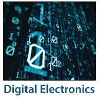

Electronics, branch of physics and electrical engineering that deals with the emission, behaviour, and effects of electrons and with electronic devices. Research in these fields has led to the development of such key devices as transistors, integrated circuits, lasers, and optical fibres.
 Invention of the transistor
The invention of the transistor in 1947 by John Bardeen, Walter H. Brattain, and William B. Shockley of the Bell research staff provided the first of a series of new devices with remarkable potential for expanding the utility of electronic equipment . Transistors, along with such subsequent developments as integrated circuits, are made of crystalline solid materials called semiconductors, which have electrical properties that can be varied over an extremely wide
Invention of the transistor
The invention of the transistor in 1947 by John Bardeen, Walter H. Brattain, and William B. Shockley of the Bell research staff provided the first of a series of new devices with remarkable potential for expanding the utility of electronic equipment . Transistors, along with such subsequent developments as integrated circuits, are made of crystalline solid materials called semiconductors, which have electrical properties that can be varied over an extremely wide
 Computers understand only two numbers, 0 and 1, and do all their arithmetic operations in this binary mode. Many electrical and electronic devices have two states: they are either off or on. A light switch is a familiar example, as are vacuum tubes and transistors. Because computers have been a major application for integrated circuits from their beginning, digital integrated circuits have become commonplace. It has thus become easy to design electronic systems that use digital language to control their functions and to communicate with other systems.